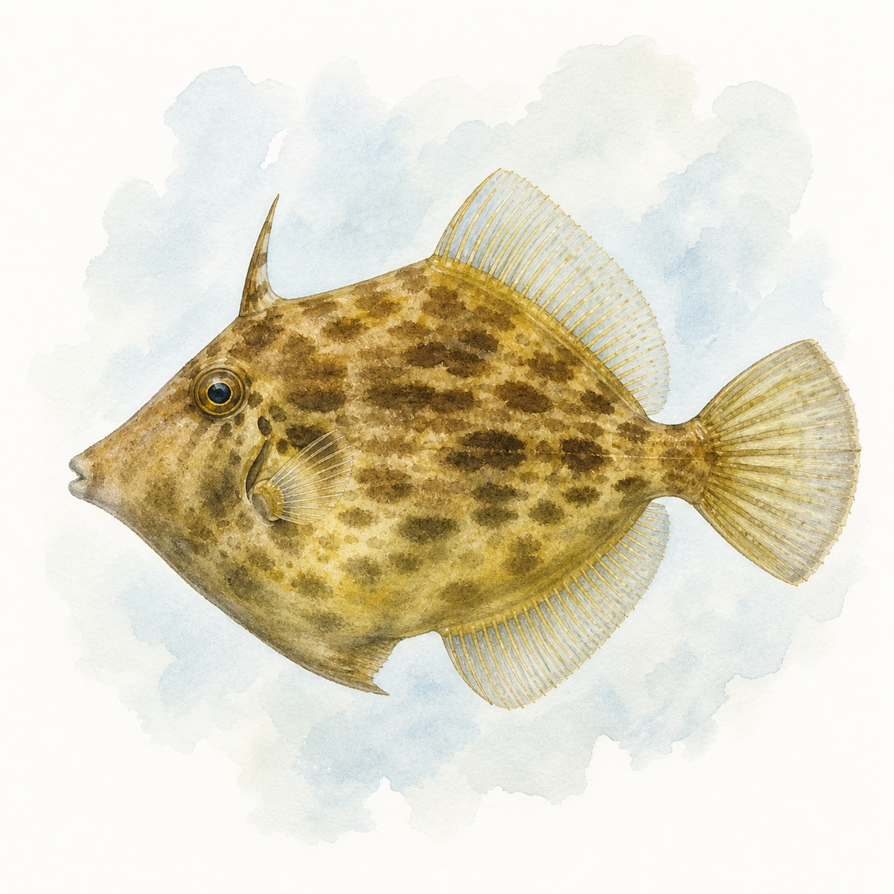

カワハギ
カワハギ
0〜11匹
5〜34cm
今週 24便・8船宿
トップ › カワハギ
神奈川・東京・千葉・茨城・静岡の5県の船宿を横断集計しています。
★ 今週実績あり（6魚種）
便数トップは久比里で、聖地・竹岡沖（1,713便と当サイト集計でも圧倒的）への最短ルート。三浦の長井（長井沖）、金谷、葉山と続き、いずれも水深10〜25mの浅場の根周りを攻める。ポイントは竹岡沖・長井沖・鴨居沖が御三家だ。
★ 今週実績あり（6エリア）
| 1月 | 2月 | 3月 | 4月 | 5月 | 6月 | 7月 | 8月 | 9月 | 10月 | 11月 | 12月 | |
|---|---|---|---|---|---|---|---|---|---|---|---|---|
| 数釣 | ||||||||||||
| 型釣 |
※ 過去3年の関東船釣り釣果データより集計（2023年〜）
最盛期は秋〜初冬。当サイトの過去3年・5,630便の集計では12月（1,034便）・11月に集中し、肝が大きくなる「肝パン」シーズンと重なる。1月（698便）まで好調が続き、春〜夏は便数が落ち着くが釣れ続ける。数狙いなら群れの活性が高い秋、肝目当てなら初冬——目的で時期を選べる釣りだ。
船釣り全般の Q&A（服装・船酔い・予約・ライフジャケット等）はよくある質問ページにまとめています。
関東カワハギ船釣りの釣果は10〜12月に実績が集中しています。1月・9月も狙える時期です。 → エリア別のシーズン傾向を見る
関東カワハギ船釣りの主なエリアは久比里港（1931便）、長井港（793便）、金沢八景（503便）です。
関東カワハギ船釣りの一日の釣果は8〜20匹が標準的なレンジです。中央値は13匹・上位10%の好日は28匹以上です。最高実績は168匹です（いずれも個人釣果ベース・船全体の合計数は除く）。
難易度は上級者向けの釣りです。エサ取りの名手相手の高度な駆け引きが醍醐味。腕の差が如実に出る釣りで、熟練者ほどはまります。関東では87船宿が出船実績あり。多くの船宿でレンタルタックルや仕掛けの購入が可能です。 → 初心者向けガイドを見る
秋〜冬（10〜2月）が関東のベストシーズンです。夏から秋に栄養を蓄えた個体は肝が大きく膨らみ「キモパン」と呼ばれて珍重されます。12月初旬までは水温も下がりすぎず食いも活発で、肝も乳白色できれいな状態。冬本番は深場移動して数は減るが大型が期待できます。出典: tsurihack.com、fish.shimano.com
肝醤油の刺身（肝和え）が定番中の定番で、肝のまったり感と白身の上品な甘さが絶品です。他に煮付け・薄造り・昆布締め・鍋・フライなど。肝はキッチンペーパーで丁寧に水気を取り、すり潰して醤油と合わせます。新鮮な肝は生食推奨ですが、心配なら軽く湯通しでも美味。出典: tsurihack.com
アサリのむき身を3点掛けする胴突き仕掛けが定番です。誘いは「タタキ」（オモリ着底後に竿先を5〜6回上下に激しく動かす）と「聞き上げ」の組み合わせ。エサ取り名人と呼ばれるカワハギ相手には繊細なアタリの取り方が肝心で、慣れるほど釣果差が出る奥深い釣りです。出典: point-i.jp、honda.co.jp
